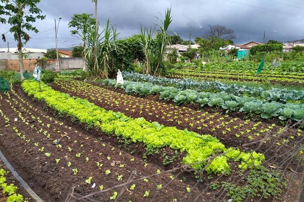

Horta comunitária
Horta comunitária é um espaço coletivo no qual se pode produzir alimentos por meio do trabalho voluntário de pessoas que vivem em determinado local ou região.
-

- Quais os benefícios da horta comunitária
Ela ajuda a solucionar problemas ambientais e sanitários, ocupando terrenos abandonados, por exemplo. Com isso, a horta comunitária costuma dar vida à área em que ocorre o plantio, de modo a proporcionar mais bem-estar à comunidade em geral.